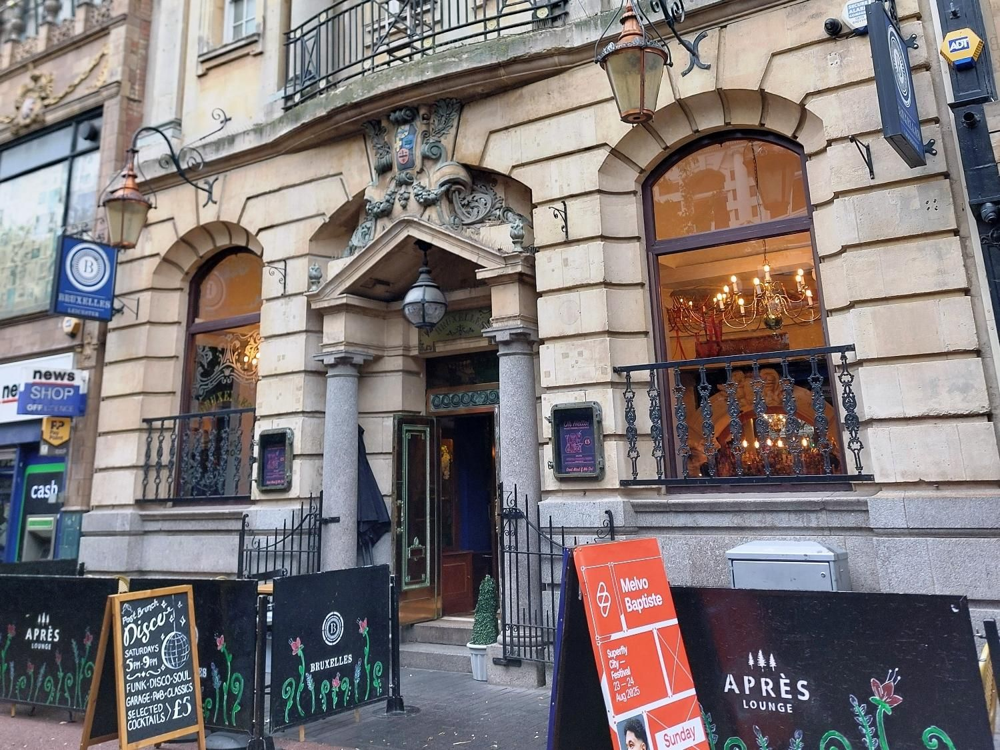

Belgian beer
Belgian beer is part of the Bruxelles identity. Ask the team about today’s selection and prices before you visit.
Call about the drinks90–92 High Street · Leicester
Belgian beer and a distinctive High Street setting.
Plan your visitLatest public posts
A place to keep in mind
Belgian beer is part of the Bruxelles identity. Ask the team about today’s selection and prices before you visit.
Call about the drinksA recent public Facebook post promoted a Friday and Saturday weekend format. Check the latest posts and contact the venue about your chosen date.
Published context, not a confirmed future event or ordinary opening-hours listing.
See the public pageThe blue B signs and stone arches in the photograph make a useful reference for finding 90–92 High Street.
Confirm any entrance or access arrangements directly with the team.
Find the contact detailsBefore you head out
Make a local checklist for your conversation with Café Bruxelles. A date here is a date to ask about, not an event listing or an availability check.
Nothing is sent or booked. The people field is a demo note, not a venue capacity policy.
Café Bruxelles
Contact the venue for current opening times, programme and visit arrangements.
These are the public business contact routes. Your local checklist is not attached or sent automatically.
Bruxelles notes
Try a local demo for beer, venue and weekend updates.